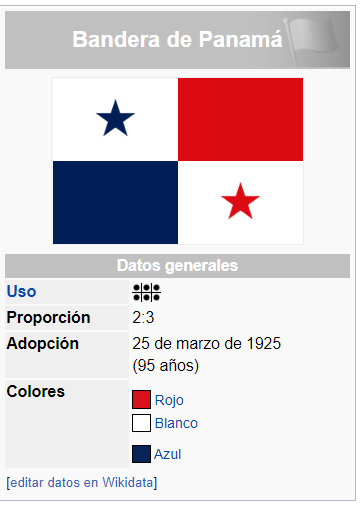
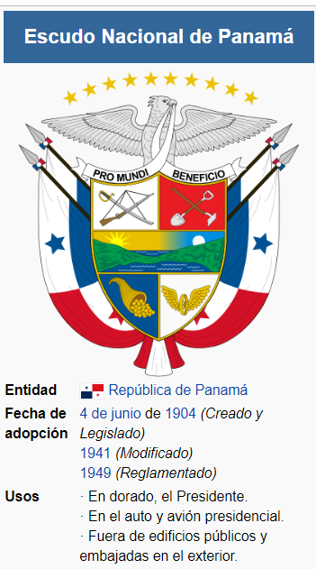
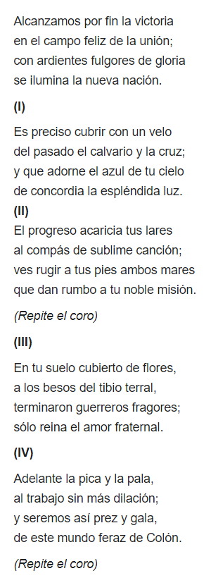

Simbolos Patrios
Los símbolos de la Nación Panameña, también conocido como los "símbolos patrios", son los elementos representativos de la República de Panamá. Son reconocidos tanto a nivel nacional como a nivel extranjero como sinónimos tanto de Panamá como de la nacionalidad panameña.
Bandera
La bandera de la República de Panamá es el más conocido e importante de los símbolos patrios de la República de Panamá. Consiste en un rectángulo dividido en cuatro cuarteles: el superior izquierdo es una estrella azul de cinco puntas sobre fondo blanco; el superior derecho es de color rojo; el inferior izquierdo es de color azul; y el inferior derecho es una estrella roja de cinco puntas sobre fondo blanco.
En el marco de la celebración de las fiestas patrias, cada 4 de noviembre se celebra en Panamá el Día de los Símbolos Patrios, como fiesta nacional. Con motivo de esta gran celebración se realizan actos conmemorativos como desfiles y ceremonias, en los cuales se le rinde tributo a la bandera y los otros símbolos patrios.
Escudo
El Escudo de Armas de la República de Panamá es el emblema heráldico que representa al país, y que junto con la bandera y el himno nacional, tiene la categoría de símbolo de la Nación por mandato de la Ley.23

Himno
El Himno Nacional de la República de Panamá es uno de los símbolos patrios de dicho país, la música es de Santos Jorge Amátrian y la letra de Jerónimo de la Ossa.
Historia
Época precolombina
Antes de la llegada de los europeos, los territorios de Panamá estaban habitados por diversas etnias que estaban organizadas en cazicasgos, estos pueblos tenían en común que sus diversos lenguajes provenían de una familia idiomática conocida hoy como Lenguas chibchenses del grupo ístmicos. No obstante, estos pueblos formaban grupos diversos por lo que no constituían una unidad política unificada.
A raíz de las crónicas españolas del siglo XVI, se ha podido determinar la extensión de los pueblos que existían en Panamá al momento de la conquista de América. Además de las crónicas, la historiografía panameña e internacional ha utilizado el lenguaje, la orfebrería y demás aspectos culturales, para lograr establecer el área de influencia territorial de las distintas naciones indígenas.24
Cacicazgos indígenas orientales
Entre las naciones indígenas que habitaban el istmo destacaban los Cuevas, cuyo territorio comprendía el suroeste de Panamá, tanto en sus costas caribeña y pacífica, incluyendo el Darién. Se ha fijado el río Atrato como el límite este de los dominios de dicho pueblo indígena, mientras, por el oeste, el territorio se extendería hasta Chame en el Pacífico y Quebore (Río Indio) en el Caribe.
Los cacicazgos Cuevas más importantes eran los de Pocorosa, Comagre y Careta; cuyos territorios ocupaban la actual comarca de Guna Yala. En el litoral pacífico destacaba el cacicazgo de Chochama que ocupaba una buena parte del golfo de San Miguel, al igual que la costa comprendida entre Chimán y la bahía de Chame, el archipiélago de Las Perlas y las islas de Chepillo, Taboga, Taboguilla y Otoque.
Cacicazgos indígenas en la región central
En la parte central del istmo vivían un número plural de naciones indígenas que no compartían lenguaje ni características fenotípicas comunes. Las crónicas españolas apuntan que estos cacicazgos mantenían constantes enfrentamientos bélicos entre ellos por el control territorial.
Entre los señoríos hallados por los españoles durante la conquista, en territorios de la actual provincia de Coclé, se menciona a Periquete, Totonaga, Taracuru, Penonomé. Sin embargo, se ha establecido que en Natá residía el cacique Acherse que comandaba todos esos territorios.
En el área geográfica de la actual península de Azuero se ha documentado los cacicazgos de Escoria, Usagaña, Quema, Guararé, Pocrí y París. No obstante se conoce que el cacique Cutatara de París había dominado mediante la guerra al resto de los cacicazgos vecinos.
En la parte central de la actual provincia de Veraguas estaba establecido el cacicazgo de Tabraba; hacia el norte se encontraba el cacicazgo de Urracá que se encontraba en el área de la actual Santa Fe; con el avance de la colonización este territorio albergó una importante resistencia indígena.